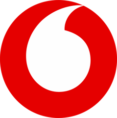
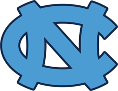
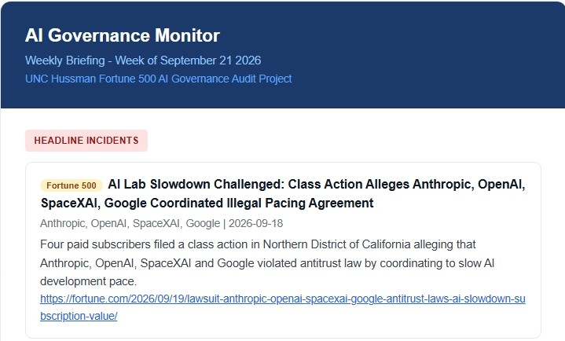
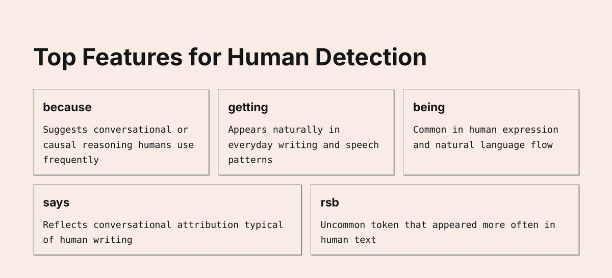
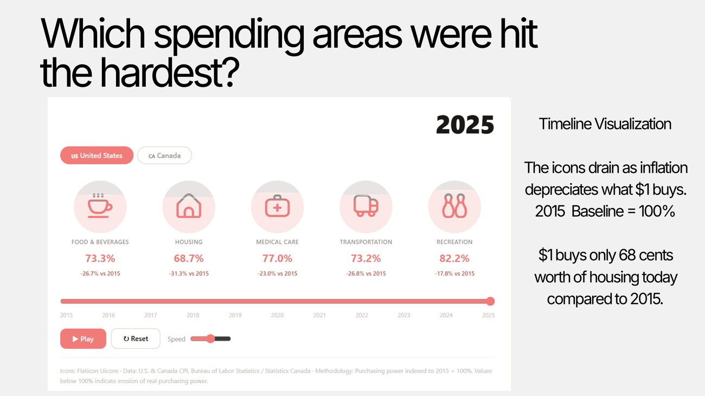
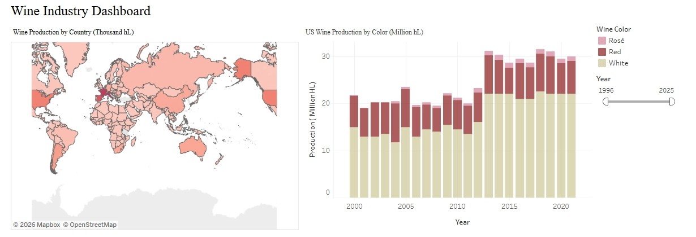
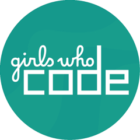

AI in Health Sciences Research
I presented work evaluating AI-generated prompts versus librarian-written prompts for health science research tasks.
Prompt engineering
Health sciences
Evaluation
I build AI tools and turn data into measurable results that win clients and grow revenue.
Four roles, each with measurable impact.
Duke / UNC Collaboration
2024–Present
IBS Consulting
2023–2024

Vodafone
2021–2023

UNC Chapel Hill
2024–Present
Presented at two conferences in 2025.
I presented work evaluating AI-generated prompts versus librarian-written prompts for health science research tasks.
My research used descriptive statistics and assessment tools to evaluate digital health information systems for user impact and adoption.
Work from my role at UNC Libraries, my graduate coursework and Tableau dashboards.

An automated weekly briefing on Fortune 500 AI governance news.

Most research hunts for the “AI fingerprint.” We flipped the question: which features best identify human writing?

I cleaned and combined a decade of BLS Consumer Price Index files and BEA Regional Price Parities into one dataset.

I built a market dashboard analyzing global wine production, U.S. output by color, and country-level pricing patterns.
MS, Data and Information Science
UNC Chapel Hill · May 2027

Girls Who Code MentorOpen to conversations about roles in AI, product, project management, strategy and business analytics.